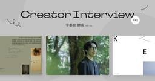
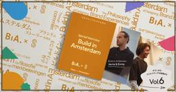

iDID – クリエイターのための情報メディア
https://idid.team/
クリエイターのための情報メディア「iDID」。ものづくり現場の人々や注目トピックを紹介するほか、イベント、アソシエイツ、スクールの4つの事業を展開するプラットフォームです。
フィード

「属人性」と「責任」。それが「人間らしい」デザイナーのあり方だと思うんです。| 宇都宮勝晃（KEI inc.）
iDID – クリエイターのための情報メディア
三年前の「思い切った行動」が、新たな自分へと変化するきっかけに 前回は2023年6月のインタビューで、あれから3年が経ちました。その後、宇都宮さんの中で状況や考えの変化などはありましたか？ 宇都宮：今振り返ってみると、実 […]投稿 「属人性」と「責任」。それが「人間らしい」デザイナーのあり方だと思うんです。| 宇都宮勝晃（KEI inc.） は iDID - クリエイターのための情報メディア に最初に表示されました。
5日前

【オランダのクリエイティブの現場から Vol.6】ブランドのストーリーを売る、ECデザインの哲学｜Build in Amsterdam（アムステルダム）
iDID – クリエイターのための情報メディア
Build in Amsterdamとは Build in Amsterdamは、Polaroid、Adidas、Vitraなど、世界的に高く評価されているデジタルコマース体験を数多く手がけてきたブランディングエージェン […]投稿 【オランダのクリエイティブの現場から Vol.6】ブランドのストーリーを売る、ECデザインの哲学｜Build in Amsterdam（アムステルダム） は iDID - クリエイターのための情報メディア に最初に表示されました。
6日前

底はまだ見えない。世界を沼らせるK-POPクリエイティブ10選 Vol.2
iDID – クリエイターのための情報メディア
投稿 底はまだ見えない。世界を沼らせるK-POPクリエイティブ10選 Vol.2 は iDID - クリエイターのための情報メディア に最初に表示されました。
8日前
AI時代における「属人性」の磨き方。前人未到の同時受講で掴んだ、教科書には載らない「クリエイティブの観点」｜CREATIVE CLASS
iDID – クリエイターのための情報メディア
なぜ2つのコースを同時に受講するという「無謀な選択」をしたのか？ 中村校長： まずは中本さん、自己紹介をお願いします。 中本： OVERA株式会社という東京のブランディング会社に所属している中本 順葉と申しま […]投稿 AI時代における「属人性」の磨き方。前人未到の同時受講で掴んだ、教科書には載らない「クリエイティブの観点」｜CREATIVE CLASS は iDID - クリエイターのための情報メディア に最初に表示されました。
11日前
Webデザインの参考になる、7月の気になるサイト10選！ / 2026年
iDID – クリエイターのための情報メディア
1. GIN NO MORI ルディック baqemono井関さんのポストが26万ビューという、話題をかっさらっていたパティスリーGIN NO MORIの新ブランド「Ludique（ルディック）」のサイト。まさ […]投稿 Webデザインの参考になる、7月の気になるサイト10選！ / 2026年 は iDID - クリエイターのための情報メディア に最初に表示されました。
19日前
【iDIDセッションレポート】ブランドは、強みではなく意思から生まれる。Farmgroup・takram・VISIONsが語るブランドデザインの実践 | SYNC Design & Innovation in SITE 2026
iDID – クリエイターのための情報メディア
SESSION 1｜タイ・リーグとJリーグのリブランディング タイリーグを、10年かけて立て直す まず話し始めたのは、タイのデザインコンサルタンシーFarmgroupのサムパタ・ジェディーさん（以下JDさん）です。ドラえ […]投稿 【iDIDセッションレポート】ブランドは、強みではなく意思から生まれる。Farmgroup・takram・VISIONsが語るブランドデザインの実践 | SYNC Design & Innovation in SITE 2026 は iDID - クリエイターのための情報メディア に最初に表示されました。
1ヶ月前
【オランダのクリエイティブの現場から Vol.5】デザインで社会を動かす「仕組み」をつくる｜Studio thonik（アムステルダム）
iDID – クリエイターのための情報メディア
Studio thonikとは 1993年にNikki GonnissenとThomas Widdershovenによって立ち上げられたアムステルダム拠点のデザインスタジオです。「the power of design」 […]投稿 【オランダのクリエイティブの現場から Vol.5】デザインで社会を動かす「仕組み」をつくる｜Studio thonik（アムステルダム） は iDID - クリエイターのための情報メディア に最初に表示されました。
1ヶ月前
広がり続けるデザインの役割｜SYNC Design & Innovation in SITE 2026
iDID – クリエイターのための情報メディア
目に見えるものだけが、デザインではない 最初に紹介するのは、NOSIGNERの太刀川英輔さんによる「Design Strategies for Climate Change」です。 太刀川さんは、「デザインとは何でしょう […]投稿 広がり続けるデザインの役割｜SYNC Design & Innovation in SITE 2026 は iDID - クリエイターのための情報メディア に最初に表示されました。
1ヶ月前
クライアントが「自然に誇れる言葉」を掘り出す。| ANDMADE & CHO-P [八文字学園70周年サイト]
iDID – クリエイターのための情報メディア
◾️経緯 – 100周年に向けて、学園が社会へ提供していく価値を定義するプロジェクト まず、このプロジェクトはどういう経緯でお話が来たのでしょうか。 パーヤン：今回のお話は、以前SHIFTBRAINさんが主幹 […]投稿 クライアントが「自然に誇れる言葉」を掘り出す。| ANDMADE & CHO-P [八文字学園70周年サイト] は iDID - クリエイターのための情報メディア に最初に表示されました。
1ヶ月前
【インタビュー】「FIFAワールドカップ2026」ブランドアイデンティティへの系譜 | 西田享将 Public Address
iDID – クリエイターのための情報メディア
混沌のキャリア、就職氷河期の逆境から始まったクリエイティブへの道 本日はよろしくお願いします。フランクに、色々とお話しさせていただければと思います。 西田享将（以下、西田）： よろしくお願いします。そうですね、ざっくばら […]投稿 【インタビュー】「FIFAワールドカップ2026」ブランドアイデンティティへの系譜 | 西田享将 Public Address は iDID - クリエイターのための情報メディア に最初に表示されました。
1ヶ月前